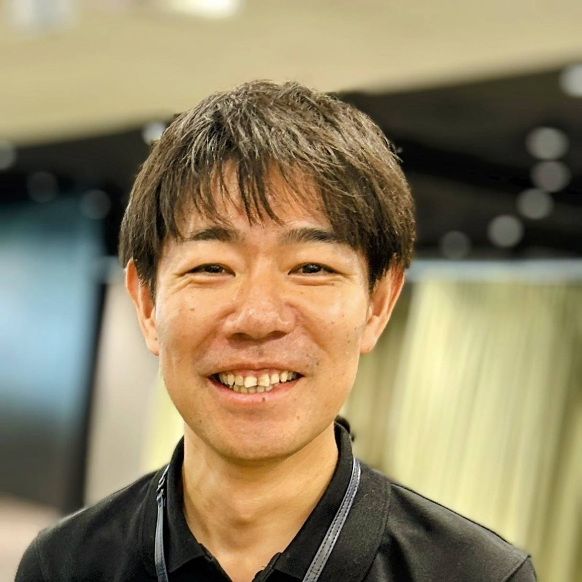

01
Sudut pandang perekrut
Persiapkan hal yang benar-benar dinilai pewawancara Jepang.
Dengan pengalaman dalam rekrutmen perusahaan Jepang, saya memberikan pelatihan pribadi yang praktis untuk wawancara, studi, bisnis, IT, dan teknik.
Tujuannya bukan menghafal jawaban, melainkan menjelaskan pengalaman dengan jelas, alami, dan meyakinkan.
Persiapkan hal yang benar-benar dinilai pewawancara Jepang.
Disusun sesuai tujuan, bidang, dan tingkat bahasa Jepang.
Perbaiki isi, nada, dan penyampaian melalui latihan nyata.
Jadwal daring fleksibel lintas zona waktu.
松下 剛治
Coach Bahasa Jepang & Wawancara Kerja
Dengan pengalaman dalam wawancara rekrutmen dan pengembangan SDM di perusahaan Jepang, saya memberikan coaching praktis satu lawan satu untuk bahasa Jepang, wawancara, presentasi diri, dan komunikasi kerja bagi siapa pun yang ingin bekerja atau belajar di Jepang.
Video singkat tentang latar belakang, pendekatan, dan cara belajar bersama saya.

Bahasa Jepang yang tepat penting; pemikiran jernih dan penyampaian meyakinkan juga penting.
Gabungkan topik yang dibutuhkan menjadi rencana belajar praktis.
Latih perkenalan, motivasi, kelebihan, pengalaman, dan pertanyaan lanjutan.

Jelaskan tujuan studi, rencana riset, pilihan universitas, dan masa depan.
Latih rapat, laporan, konsultasi, presentasi, dan surel profesional.

Jelaskan pengalaman teknis, proyek, pemecahan masalah, dan kerja tim.
Jawab tiga pertanyaan untuk menerima rekomendasi fokus.
Ini adalah rekomendasi berbasis aturan yang transparan, bukan keputusan penerimaan kerja atau studi.
Gunakan alat wawancara dan perkenalan diri ini sebelum konsultasi pertama.
Panduan asli dan praktis bagi pelamar dan pelajar.
Hindari klaim samar dan penjelasan terlalu panjang.
Baca artikel →Hubungkan masa lalu, program pilihan, dan rencana masa depan.
Baca artikel →Jelaskan proyek kepada insinyur dan perekrut dengan jelas.
Baca artikel →
Sampaikan tujuan, tingkat bahasa Jepang, dan bantuan yang dibutuhkan. Saya akan menyarankan langkah berikutnya.